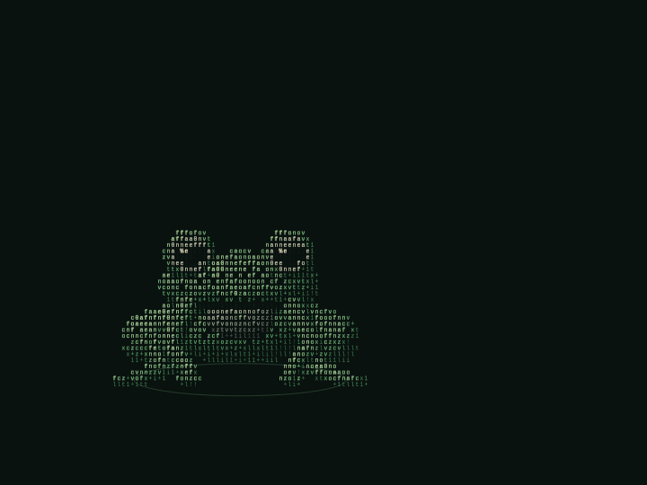

A STUDY IN ANTICIPATION
A little leap.
A quiet breath. A considered landing.
A small creature, ready when you are.
FROG / LANDING STUDYPOINT TO AIM · TAP TO LEAP

The live Canvas preview is unavailable. This is a static specimen of the frog.
Aim with the pointer, then tap or press Leap. The frog waits for you.
- 01Gather
Folded legs load up beneath a low, steady body.
- 02Leap
One committed arc toward the marked landing.
- 03Settle
A soft compression, a short recovery, then stillness.
Shape, motion & specimen
Keyboard: focus the scene, use arrows to aim and Enter or Space to leap. Tab moves to every control. Touch: tap a landing point, or use the Landing menu and Leap. Pause keeps the current pose; the Static pose menu pauses on a chosen posture. Reduced motion keeps the frog still and lets Leap cycle poses.